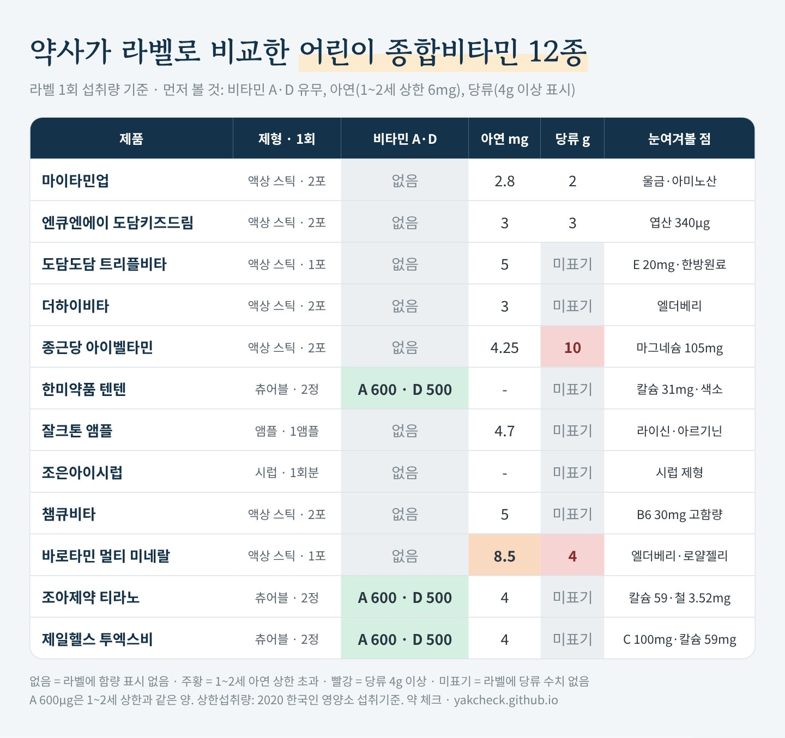

고기를 안 먹고 입이 짧아요
함께 볼 성분: 비타민 B군, 아미노산, 효소 원료(파파인·브로멜라인), 울금
- 마이타민업울금추출물 + 아미노산 · 아연 2.8mg · 당류 2g
- 엔큐엔에이 도담키즈드림엽산 340μg · 실크펩타이드 · 파파인 원료 · 당류 3g
약 체크 · 어린이 종합비타민
어린이 종합비타민은 제품마다 설계가 완전히 달라요. 특히 인기 액상 스틱 상당수는 비타민 A·D가 표시돼 있지 않고, 당류와 아연 함량도 차이가 커요.
약국과 시중에서 많이 찾는 12개 제품을 라벨 수치 그대로 정리했어요. 광고 문구 말고 숫자로 골라 보세요.
표에서 색으로 표시한 부분이에요.
액상 스틱 7종은 라벨에 비타민 A·D 함량이 없어요. 실내 생활이 많은 아이라면 비타민 D 드롭 같은 제품을 따로 챙길지 상담해 보세요.
맛을 내려고 당류가 1회 최대 10g까지 들어간 제품이 있어요. 입이 짧거나 충치가 걱정되면 당류부터 확인하세요. '미표기'는 라벨에 당류 수치가 없다는 뜻이에요.
아연의 하루 상한섭취량은 1~2세 6mg, 3~5세 9mg이에요. 아연 8.5mg 제품은 1~2세에게는 상한을 넘으니, 다른 영양제와 겹치지 않는지도 함께 보세요.
가까운 고민부터 보세요. 먹일 수 있는 나이는 제품 라벨에서 꼭 확인해 주세요.
함께 볼 성분: 비타민 B군, 아미노산, 효소 원료(파파인·브로멜라인), 울금
함께 볼 성분: 아연(정상적인 면역 기능에 필요), 엘더베리 등 부원료
함께 볼 성분: 마그네슘(신경과 근육 기능 유지에 필요), 셀렌
함께 볼 성분: 비타민 B군(에너지 생성에 필요), 아르기닌·라이신
함께 볼 성분: 비타민 A·D·C, 칼슘, 아연이 함께 든 종합 설계
츄어블 3종의 비타민 A 600μg은 1~2세 상한섭취량과 같은 양이에요. 츄어블을 씹을 수 있는 나이인지, 다른 제품과 겹치지 않는지 확인하세요.
약국에 오실 때 보여 주시거나 가족에게 보내기 좋아요.

버튼이 안 되면 사진을 2~3초 꾹 눌러 저장하세요.
라벨의 1회 섭취량 기준이에요. 표를 옆으로 밀어 보세요 →
빈 칸(없음)은 라벨 영양정보에 수치가 없다는 뜻이에요. 부원료로 들어 있어도 함량이 표시되지 않으면 '부원료' 칸에만 적었어요. 상한섭취량은 2020 한국인 영양소 섭취기준(보건복지부·한국영양학회) 기준이에요.
이 정리본은 제품 라벨 데이터를 바탕으로 한 비교이고, 절대적인 선택 기준은 아니에요.
아이의 식습관, 활동량, 성장 상태, 지금 불편한 점에 따라 맞는 조합은 달라져요. "우리 아이에게 뭐가 맞을지", "먹이던 유산균·철분제와 겹치지 않는지" 궁금하면 댓글이나 DM으로 편하게 물어봐 주세요.
출처: 각 제품 라벨 표시 정보(작성 시점 기준) · 보건복지부·한국영양학회, 「2020 한국인 영양소 섭취기준」 상한섭취량